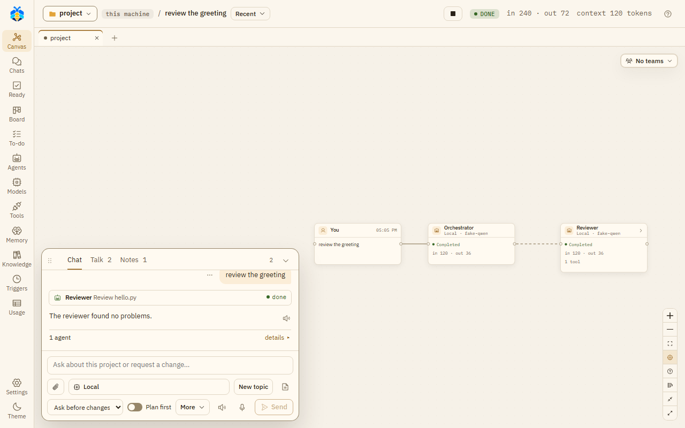
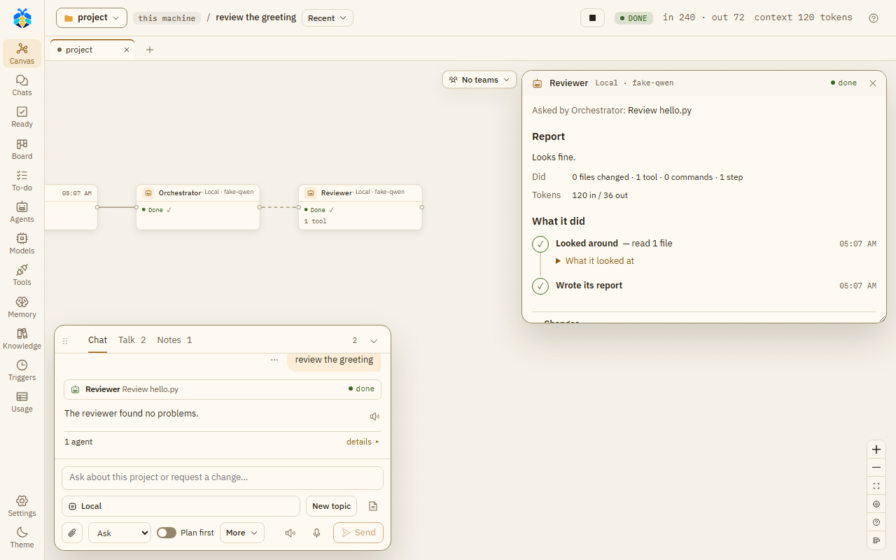

Chat and canvas¶
The chat is where you talk to the Orchestrator. The canvas behind it draws each turn from what was recorded: the agents, their tools, commands and the files they changed. Nothing on it is simulated.

A turn on the canvas, with the chat beside it.

A turn's life, from your message (and its plan, with Plan first) to the work in your folder, and the Assistant PO after it.
The chat¶
The chat panel has three tabs:
- Chat: "Your conversation with the Orchestrator".
- Talk: "What the agents say to each other, to hand work on or ask one another".
- Notes: "A shared notebook: you and the agents leave notes here, kept from message to message and given to new agents".
Hide chat (or Esc) folds it to one line that says how many messages are unread and how many things wait for you. Drag its grip to move it, and its top edge to resize it.
Writing a message¶
- While agents work, Send becomes Queue: your message waits and runs after the current work. A queued message can be removed. Stop stops the work.
- Stop everything, in the top bar on every page, stops every turn in every chat and holds what starts by itself: triggers, To-do lists that run by themselves, and work while you're away. It asks first, saying what runs and what will be held. Then the button reads Held · Resume; its panel lists the chats it stopped and what is held, with Resume. Your own messages still run while it holds. After Resume, a trigger waits for its next time: the times missed meanwhile are skipped.
- On Stop or Stop everything, an agent on a branch of its own keeps its work committed there, and a team's recipe keeps its copy for Take in, and so does a job while you're away (see Work while you're away). A sub-agent's plain working copy with changes is kept on a card for Take in or Discard. See Working copies and Take in.
- Pasted code becomes a code block by itself, with Paste as plain text to undo that.
- New topic starts a new topic with the next message.
- Under the box, two lines. The first is what the message runs on: the model button, New topic, Workspace and Chat. The second is how far it may go, and Send: Attach, the permission level (see Permission levels), Plan first (see Plan first), More (Compare and Work together) and Send.
- Chat (the gear, at the end of the first line; under More in a narrow chat) opens this chat's own settings: its teams and folders (each opens its own panel), its page scripts, what runs without asking in it, and, read only, what it takes from its project. Its All settings opens Settings at This chat.
- In a narrow chat the model button ends in "…": its tooltip and its window say the whole name. Buttons keep only their icon, and Auto-read and Dictate go under More (a dot on it says so). The level always shows its short name ("Ask", "Auto-edit", "Full auto"); its tooltip says the full one.
- Type
/for slash commands:/new,/room,/stop,/model,/mode,/plan,/compare, a role's name to hand it a task, and your own commands (Settings › This project › Slash commands).
What the chat shows¶
- Two or more tool calls in a row by the same agent fold into one line, such as "Read 4 files, listed 4 folders". Failed or rejected calls are always shown.
- Under a turn that did something, one line sums it up, such as "2 agents · 3 files changed", with what is left open. details ▸ shows the files, sub-agents, tokens and known cost.
- A message's ⋯ menu has Copy, Restore to before this message and Show its work on the canvas. The ↺ button on a message whose work changed files is Undo these changes.
Undo and restore¶
Undo these changes reverts a turn's file changes. Restore to before this message goes back to before a message. Both show first what will be reverted and what will be skipped. "The chat stays as it is: no message is deleted." What commands did, and notes put in memory, are not taken back.
The context button¶
The top bar has a context button for the turn, such as "context 62%". It opens what each agent of the turn holds, of its model's window, with Compact now for a lead that KOLONİ compacts: its older part is summarised now, as it would be once past Summarise a long context at (%) in Settings. The button is there for every turn, as "context –" where nothing was measured. Which CLIs KOLONİ compacts is in Set up a CLI.
Tabs above the canvas¶
Each open folder (project) is a tab; a chat with no folder is under No folder. A tab's dot turns orange while a chat in that folder waits for you. + goes to another folder; closing a tab closes no chat.
The folder button¶
At the top left. Its panel, This chat's folders, shows the main folder ("agents work here, commands run here") with Change, and offers Open a folder… and No folder · a plain chat. A chat that has messages keeps its folder; picking another opens a new chat there.
Also in this chat lists other folders the chat's agents may use, each read or read & write (click to switch). + Add a folder adds one, read only at first. Keep for this project and Save as this folder's default keep the list.
The canvas¶
Every agent is a small box of at most three lines: its name and model, its state, and what it did, counted. Its tools, commands and files are in the Inspector and its window (below). Lines show work handed to a sub-agent, agents that talked, findings handed on, and an agent waiting for a file another holds. Canvas legend explains every line and sign.
Click an agent that talked and What X said and was told opens on the right, under the Teams button: its messages and findings as a short conversation. Click a line between two agents and the same box shows what they said to each other, titled "A ↔ B". Drag it by its title, or move it with the arrow keys on its grip. This browser keeps one place for it, the same in every chat. A double click on its title, or Enter on its grip, puts it back.
A plan turn (see Plan first) shows a small Plan node. In the work turn of an approved plan, the plan stands over the Orchestrator, on a dashed line down to it.
In a turn with teams, each team has a frame. Discussions and rooms between teams stand in a lane of their own, outside every frame; a room opened with two teams' leads stands there too. A member's dotted line runs from its team's frame to the lane; the legend calls it "A member's line to its discussion or room (between teams, from its frame to the lane)".
Where the Assistant PO was asked after the turn, a small Assistant PO box stands under the turn, on a dashed line down from the Orchestrator. It shows the model asked, how many tasks it proposed and dropped ("2 proposed · 1 dropped"), at Full auto how many the Orchestrator added ("Orchestrator added 1"), its tokens ("–" where not reported) and To-do →. Click it for why each one was dropped; a double click, or To-do →, opens the To-do page. A turn where it was not asked has no such box. The legend has a row for its dashed line. See Follow-up tasks.
A step that runs in rounds, such as a review loop or Evolve's tries, folds each earlier round into one line, such as "Round 2 · 4 reviewed · 2 blocking" or "Round 1 · Coder, Coder 2 · ✓ 2". Click it to open that round's agents in place.
The controls: Collapse all / Expand all, Follow running, and the Recent button, which lists the last five turns (and older ones that wait for you) to pick which turn is drawn.
Click an agent to open the Inspector, a short report card. From the top:
- if it failed, why, in red, with the one thing to do about it;
- a tag where its CLI works its own way: "reads only" (started without leave to write or run) or "works with its own tools";
- anything it waits for you on (a command to run, its changes, a question). It is the same card as in the chat, and answering in one place answers it everywhere;
- who asked it what, on one line;
- its Report, or while it works "No report yet" and what it is on now. A long report is cut at six lines, with Show all;
- Changes: the files it changed, each with View diff, which opens the file in the Workspace;
- what it did, counted, and its tokens. A number its provider did not report is "–".
Its model, how full its context is, and Compact now are in its window's Details.
Open window opens the agent's whole story. Read from the top:
- its report;
- What it did, told in a few plain steps. Reads in a row are one step ("Looked around — read 6 files, searched 1 time"), and so are edits ("Changed a.py +17 −1") and commands ("Ran the tests — passed"). Each step shows what the agent said before it. Unfold a step to see its files or its commands, with Stop on one that runs. While something waits for you, it is the last step, with its card;
- its Changes, Earlier work and Sub-agents;
- Details, folded: its model and who chose it, its times, how full its context is, Compact now and its working state, its tools, Copy raw, and Every step as recorded (the raw list of every call).

An agent's window, opened from the Inspector with Open window.
Preview¶
An agent can start a dev server that keeps running, on this machine only, and show its page. At most three run in a chat. They are listed under Previews in the Workspace; a preview has Reload, Open in browser and Stop.